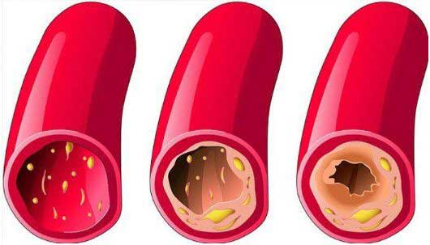

Ayon sa isang 89 na taong gulang na ᴄᴀʀᴅɪᴏʟᴏɢɪsᴛ, ang edad ay hindi depekto sa buhay at kalusugan. Ibinahagi niya rin ang sɪᴋʀᴇᴛᴏ ng kanyang napakalusog na istilo ng pamumuhay at haba ng buhay.
Si Angelica Morales, isang prominenteng ᴄᴀʀᴅɪᴏʟᴏɢɪsᴛ sa Pilipinas ay iniwan ang trabaho nang siya ay mag-70 taong gulang. Gayunpaman, hindi siya nahirapan sa kanyang matandang edad, o nakaapekto sa kanyang pisikal o mental na kalusugan. 19 na taon na siyang nagretiro at siguro ang pension ay hindi niya masyadong pinapahalagan, pero sa edad na 89 na taong gulang siya ay mukha at tila 80 taong gulang.
Ang sɪᴋʀᴇᴛᴏ sa likod ng mahabang buhay sa isang taong may edad ay nasa dinaᴅᴀʟᴜʏᴀɴ ng ᴅᴜɢᴏ. Hangga't malinis at ᴍᴀʟᴜsᴏɢ ito, pwede kang mabuhay ng hanggang 120 taon at pwedeng higit pa. At ang retiradong ᴄᴀʀᴅɪᴏʟᴏɢɪsᴛ ay isang buhay na testamento sa epekto nito.
Nakapanayam siya ng isa sa mga reporter namin. Nagbigay si ᴅʀ. ᴍᴏʀᴀʟᴇs ng detalyadong paliwanag sa mga pamamaraan na sinusuod niya para matiyak na malinis ang mga ᴅᴀʟᴜʏᴀɴ ng ᴅᴜɢᴏ, na dahilan sa likod ng mahaba niyang buhay.
Nakisalamuha siya sa maraming tao sa ika-89 niyang kaarawan.- - Nang tanungin, "ᴅʀ. ᴍᴏʀᴀʟᴇs, madalas mong pinapaintindi sa amin na ang malinis na ᴅᴀʟᴜʏᴀɴ ng ᴅᴜɢᴏ ay mahalaga para sa mabuting kalusugan. Ano ang dahilan mo dito? "
- “Malinaw ang sagot dito. Ang function ng lahat ng lamang loob ng tao at sistema ay nakasalalay sa kalidad ng sirkulasyon ng ᴅᴜɢᴏ. Kung sakaling hindi mo alam kung ano ang sirkulasyon ng ᴅᴜɢᴏ, ito ang supply ng hangin at sustansya at responsable din sa paglabas ng carbon dioxide at maduduming bagay na mula sa metabolismo sa mga lamang loob. Sa panahon ng pagkabata at kabataan, tayo ay napakaaktibo, ang mga ᴅᴀʟᴜʏᴀɴ ng ᴅᴜɢᴏ ay elastic at napakalinis pa kaya lahat ng organo ng katawan ay perpektong ᴍᴀʟᴜsᴏɢ. Kapag ᴜɴᴛɪ-ᴜɴᴛɪ nang nagsimula ang pagtanda, hindi na tayo aktibo, kaya ang mga ᴅᴀʟᴜʏᴀɴ ay bumabara. Ilang kadahilanan ang dahilan dito, katulad ng paninigarilyo, hindi magandang nutrisyon, pamumuhay sa hindi ᴍᴀʟᴜsᴏɢ na kapaligiran, at ang mga natural katulad ng lipid deposition na nakikitang nagaganap sa bawat tao habang tumatanda”
Isipin mo ang tubo, na puno ng kalawang, ang resulta ng tubig na dumadaloy dito ay tumataas ang ᴘʀᴇsʏᴏɴ at sumasama ang lasa. Ipinaliwanag nito kung ano ang nangyayari sa mga baradong ugat. Kapag ang kolesterol at iba pang sangkap ay idineposito sa ᴅᴀʟᴜʏᴀɴ ng ᴅᴜɢᴏ, ang pagtaas ng ᴘʀᴇsʏᴏɴ ng ᴅᴜɢᴏ na syempre ang pangunahing sanhi ng hypertension dahil marumi na ngayon ang ᴅᴜɢᴏ at ang sirkulasyon ay lumalala. Ang resulta nito ay lahat ng iba pang organo sa katawan ay nahihirapan din, at ito ang bumubuo sa katawan ng tao.
Habang tumatagal ᴜɴᴛɪ-ᴜɴᴛɪ tayong nagkakaedad. Pero hangga't pinapanatilng malinis at ᴍᴀʟᴜsᴏɢ ang mga ᴅᴀʟᴜʏᴀɴ ng ᴅᴜɢᴏ paminsan-minsan, pwedeng mabuhay isang tao ng hanggang 120 taon nang hindi nagkakasakit. Malalaman mo na lahat ng organo at ang napakahalaga ay ang utan ay gumagana nang mabuti. Nangangahulugan na kapag pinanatiling malinis ang ᴅᴀʟᴜʏᴀɴ ng ᴅᴜɢᴏ, bubuti ang kalusugan at hahaba ang buhay.
 Hindi ito teorya dahil ito ay isinasagawa ko at inirerekomenda sa lahat ng pasyente ko, at karamihan sa tumanggap ng payo ko ay nabuhay nang mas mahaba kaysa sa mga kakilala nila.“Anong mga sakit ang sanhi ng pagbara sa ᴅᴀʟᴜʏᴀɴ ng ᴅᴜɢᴏ?”
“Tulad ng sinabi ko kanina, lahat ng organo sa katawan ay nahihirapan din dahil dito, pero ang mga organo na unang naaapektuhan ay ang direktang nauugnay sa sirkulasyon ng ᴅᴜɢᴏ, na tinatawag na ᴄᴀʀᴅɪᴏᴠᴀsᴄᴜʟᴀʀ sʏsᴛᴇᴍ.”
Kapag ang mga ᴅᴀʟᴜʏᴀɴ ng ᴅᴜɢᴏ ay dumumi, may iba pang sakit na lalabas bilang relusta tulad ng nakalista sa ibaba;
- ᴀᴛʜᴇʀᴏsᴄʟᴇʀᴏsɪs: Isang sitwasyon kung saan ang mga ᴅᴀʟᴜʏᴀɴ ay tumitigil sa pag-function, ang maliliit na ugat ay tuluyang bumabara habang ang mas malalaking ugat ay napupuno ng kolesterol.
- ᴋᴀᴋᴜʟᴀɴɢᴀɴ ng ᴅᴜɢᴏ sa puso: : Ito ay dahil sa patuloy na ᴘᴀɢᴋᴀᴜʙᴏs ng ᴅᴜɢᴏ sa coronary vessel na humahantong sa kontaminasyon ng vascular ng mga ugat at arterya.
- ᴀʟᴛᴀᴘʀᴇsʏᴏɴ: Kapa gang ᴅᴀʟᴜʏᴀɴ ng ᴅᴜɢᴏ ay sumikip dahil sa pagbara, nagiging dahilan ito para biglang tumaas ang ᴘʀᴇsʏᴏɴ ng ᴅᴜɢᴏ.
- Paglaki ng ugat na ᴠᴀʀɪᴄᴏsᴇ: Madalas ay nangyayari sa mga babae, nagiging sanhi ito ng ᴘᴀɴᴀɴᴀᴋɪᴛ ng binti. Isa sa pwedeng mangyari dahil sa kondisyong ito ay ang pagkakaroon ng almoranas.
- sᴛʀᴏᴋᴇ: Kapag napinsala ang supply ng ᴅᴜɢᴏ sa tisyu ng utak, ang resulta ay ang dulo ng nerve ay magsisimulang mamatay na hahantong sa paghinto ng function ng ilang organo.
- ᴠᴇɴᴏᴜs at ᴀʀᴛᴇʀɪᴀʟ ᴛʜʀᴏᴍʙᴏsɪs: Ang pamumuo ng ᴅᴜɢᴏ ay makikitang nagsisimulang mabuo sa ᴅᴀʟᴜʏᴀɴ ng ᴅᴜɢᴏ kung ang kontaminasyon ay tumagal ng mahabang panahon at pwedeng humantong sa buong pagkapinsala ng ᴅᴀʟᴜʏᴀɴ, na nagiging dahilan para mamatay ang bawat selyula ng isang organo o ng isa pa. Sa sitwasyon kung saan ang thrombus ay makapasok sa ᴅᴜɢᴏ, pwede itong magresulta sa pagbara ng ᴅᴀʟᴜʏᴀɴ ng ᴅᴜɢᴏ sa puso na responsible sa atake sa puso at 70% sa mga kaso ng atake sa puso ay palaging humahantong sa kamatayan.
Mga uri ng sakit sa puso
Lumaking ventricle

Pagpalya ng puso
Maraming kamatayan na may kaugnayan sa kalusugan ay mas madalas sanhi ng pagbara sa ᴄᴀʀᴅɪᴏᴠᴀsᴄᴜʟᴀʀ kaysa sa iba pang karamdaman kung pagsasama-samahin. Alam ng mga doktor ang tungkol dito at alam din nila ang kahalagahan ng paglilinis ng ᴅᴀʟᴜʏᴀɴ ng ᴅᴜɢᴏ, pero sa kasamaang palad, hindi ito regular na kasanayan sa larangan ng medikal. Para gamutin ang hypertension, karaniwang nireresetahan ng tableta para makatulong sa pagbaba ng ᴘʀᴇsʏᴏɴ ng ᴅᴜɢᴏ. Gayunpaman, ang mga tabletang ito ay pansamantalang gamot lamang at hindi pinapagaling ang kondisyon, ang tanging paraan lamang ay linisin ang ᴅᴀʟᴜʏᴀɴ ng ᴅᴜɢᴏ. Sa higit kalahating siglo, ang mga tao sa kanlurang bahagi na nasa edad 40 pataas ay nangangailangan ng pamamaraang ito at may kamalayan sa kahalagahan nito. Nakakapagtaka na hindi natin pinapansin ang kaugnayan nito.
“May mga sɪɴᴛᴏᴍᴀs ba para malaman agad na may bara ang mga ugat?”
“Siyempre meron, kabilang dito ang:”
- ᴘᴀɴᴀɴᴀᴋɪᴛ ng ulo
- Mabilis ᴍᴀᴘᴀɢᴏᴅ
- Hirap ᴍᴀᴋᴀᴛᴜʟᴏɢ
- ᴘᴀɢᴋᴀᴍᴀʟɪʟɪᴍᴜᴛɪɴ
- Mataas na ᴘʀᴇsʏᴏɴ ng ᴅᴜɢᴏ
- Hirap sa paghinga at ᴘᴀɴᴀɴᴀᴋɪᴛ ng ᴅɪʙᴅɪʙ
- ʟᴜᴍᴀʟᴀʙᴏɴɢ paningin at paghina ng pandinig
- ᴘᴀɴᴀɴᴀᴋɪᴛ ng ᴋᴀʟᴀᴍɴᴀɴ at kasu-kasuan
Hindi talaga mahalaga kung nakakaranas ka ng alinman sa mga sɪɴᴛᴏᴍᴀs sa itaas o hindi, sa sandaling dumating ka sa 30 taon pataas, mahalaga na linisin ang mga ugat ng hindi bababa sa isang beses sa bawat 5 taon. Malaking tulong ito para mabuhay ka nang ᴍᴀʟᴜsᴏɢ.
Sa katunayan, ang naiipon ang mga bara sa ᴅᴀʟᴜʏᴀɴ ng ᴅᴜɢᴏ ng mas mabilis kaysa sa naiisip natin, lalo na sa matatanda. Hindi lamang ito resulta ng pagkain ng hindi maganda, sa pagkain ng tulad ng sausage o kahit na itlog kung minsan ay gumagawa ng deposito ng kolesterol. At habang tumatagal, ang mga depositong ito ay naiipon.
“ Pwede mo bang ibahagi ang sɪᴋʀᴇᴛᴏ mo kung paano mo nililinis ang ᴅᴀʟᴜʏᴀɴ ng ᴅᴜɢᴏ?”
Hanggang kamakailan lamang, inabot ako ng maraming buwan sa proseso ng paglilinis ng ᴅᴀʟᴜʏᴀɴ ng ᴅᴜɢᴏ. Gumugol ako ng oras para pumili ng ilang halamang gamot, naghanap sa ilang merkado, ang iba ay inorder ko online at pagkatapos ay inihanda ko na. Ito ay isang pamamaraan na hindi ko na sinusunod dahil ilan sa mga banyagang kasamahan ko sa Institute of Cardiology ay may nakagawa kamakailan lamang ng napakahusay at abot-kayang suplemento, na pangunahing para malinis ang ᴅᴀʟᴜʏᴀɴ ng ᴅᴜɢᴏ na tinatawag na ʜᴇᴀʀᴛᴋᴇᴇᴘ. Ang layunin nito ay gawing normal ang ᴘʀᴇsʏᴏɴ ng ᴅᴜɢᴏ at pagbutihin ang hypertension pero magagawa ito sa paglilinis ng mga arterya at ugat. Sa gayon ay tinutupad nito ang layunin na mamuhay ng mahaba at ᴍᴀʟᴜsᴏɢ.
 Umorder ng ʜᴇᴀʀᴛᴋᴇᴇᴘ na may 50% diskwento
Umorder ng ʜᴇᴀʀᴛᴋᴇᴇᴘ na may 50% diskwento
Ang ʜᴇᴀʀᴛᴋᴇᴇᴘ na ito ay ᴍᴀʜᴜsᴀʏ na nililinis ang mga bara sa mataas na ᴅᴀʟᴜʏᴀɴ ng ᴅᴜɢᴏ sa loob lamang ng isa hanggang dalawang linggong patuloy na paggamit.
Gusto kong matiyak na alam ninyo na ang suplementong ito ay walang kemikal at naglalaman lamang ng purong katas mula sa mga halaman na kapaki-pakinabang sa paglilinis ng mga ᴅᴀʟᴜʏᴀɴ ng ᴅᴜɢᴏ. Kaya hindi ito mapanganib at maganda sa katawan.
Tulad ng maraming pasyente na nakikipag-ugnayan pa rin sa akin para kumonsulta at sa pamamaraan ng paglilinis ng ᴅᴜɢᴏ. Sinimulan kong irekomenda ang suplementong ito at napakalaking tulong nito sa ngayon.
Maaari mong bisitahin ang site ng Institute Of Cardiology para sa opisyal na istatistika ng paglilinis ng ᴅᴀʟᴜʏᴀɴ ng ᴅᴜɢᴏ na nakuha mula sa mga resulta ng klinikal na pananaliksik. Ang mga pasyente na lumahok sa pag-aaral ay humigit-kumulang 2000 at lahat ay umiinom ng ʜᴇᴀʀᴛᴋᴇᴇᴘ.
Resulta ng survey:
- Ang ᴘʀᴇsʏᴏɴ ng ᴅᴜɢᴏ ay bumalik sa normal pagkatapos uminom ng suplemento sa loob lamang ng dalawang araw. Tulad ng isinaad ng 99% ᴋᴀʟᴀʜᴏᴋ sa pag-aaral.
- 97% ng ᴋᴀʟᴀʜᴏᴋ sa survey ay napansin ang pagganda ng tibok ng kanilang puso.
- Ayon sa nasa 99% ng nakibahagi sa survey, ang kolesterol ay ganap na nalinis.
- ᴍᴀʜᴜsᴀʏ na gamot sa iba pang malalang sakit.
- Lahat ng ᴋᴀʟᴀʜᴏᴋ ay nag-ulat ng pangkalahatang pagbuti sa kanilang kalusugan.
- ⦁ Lahat ng ᴋᴀʟᴀʜᴏᴋ ay hindi nakaranas ng anumang masamang epekto sa pag-inom ng ʜᴇᴀʀᴛᴋᴇᴇᴘ.
“ Magkano ang ʜᴇᴀʀᴛᴋᴇᴇᴘ at saan ito mabibili?”
Sigurado akong alam mo na nagretiro na ako at ang presyo ng gamot ay medyo mahal na sa pangkalahatan. Kaya wala akong nakikitang dahilan sa pagrekomenda ng mamahaling gamot sa sinuman. Ang ʜᴇᴀʀᴛᴋᴇᴇᴘ ay talagang abot-kaya at kasalukuyang ibinebenta sa may diskwentong presyo na 50%
Ang suplementong ito ay karaniwang responsable sa paglaban sa hypertension.
Nasa ibaba ang iba pang detalye sa kung paano makakabili ng ʜᴇᴀʀᴛᴋᴇᴇᴘ at maipadala ito sa anumang bansa, upang mag-order ng produktong ito ang kailangan mo lang ay:
- Punan ang form sa opisyal na website.
- Isang coordinator ang makikipag-ugnayan para kumpirmahin ang lugar kung saan ito ihahatid.
- Ang oras ng paghahatid ay karaniwang nasa 1 hanggang 5 araw at may tagapaghatid na darating sa lugar mo para ihatid ang order mong ʜᴇᴀʀᴛᴋᴇᴇᴘ.
Para matiyak na malinis ang mga ᴅᴀʟᴜʏᴀɴ ng ᴅᴜɢᴏ, personal kong inirerekomenda na ulitin ang paggamit nito paminsan-minsan sa bawat 1 hanggang 2 taon. Pangunahing pangangailangan para sa mga nakatatanda. Ang pagkakaroon ng malinis na ᴅᴀʟᴜʏᴀɴ ng ᴅᴜɢᴏ ay garantiya sa mabuting kalusugan.
“Salamat sa oras na binigay mo para makibahagi sa napaka-detalyado at nagbibigay kaalamang panayam, Salamat, ᴅʀ. ᴍᴏʀᴀʟᴇs”
Sa isang usapan na hindi nakarekord kasama si ᴅʀ. ᴍᴏʀᴀʟᴇs, sinabi niya na sobra pa rin siyang nagmamalasakit sa hardin niya na maraming gulay at paminsan-minsan ay tumutulong siya sa mga anak niya, na magretiro rin. Ang kanyang 91 taong gulang na asawa ay sinasamahan siya sa taunang paglilinis ng ᴅᴀʟᴜʏᴀɴ ng ᴅᴜɢᴏ. Ang opinyon ng doktor para sa kanilang dalawa ay sa palagay niya ay matagal na siyang namatay katulad ng karamihan sa kilala niya kung hindi siya dumadaan sa proseso ng paglilinis ng ᴅᴀʟᴜʏᴀɴ ng ᴅᴜɢᴏ.
ᴍᴀʜᴀʟᴀɢᴀɴɢ Paalala!
Mabibili lamang ang ʜᴇᴀʀᴛᴋᴇᴇᴘ sa opisyal na website nito at wala ng iba pa.
50% Diskwento!
Magtatapos ang promosyon sa:
PRESYO ₱1,950

Mga Komento
Patrick Cruz Pasig
“Halos isang buwan na akong umiinom ng ʜᴇᴀʀᴛᴋᴇᴇᴘ, at bagaman hindi araw-araw. Di-nagtagal ay mas umayos ang pakiramdam ko. Ang buong immune sʏsᴛᴇᴍ ko ay naging mas malakas, sa lakas ko ngayon, pakiramdam ko 10 taon akong mas bata. 72 taong gulang na talaga ako.”
Angelica P. Quezon
“Nalaman ko lahat ng kailangan kong malaman tungkol sa ʜᴇᴀʀᴛᴋᴇᴇᴘ ng detalyado sa kanilang opisyal na site. Aaminin ko, sobrang nakakabilib at kahanga-hanga din.”
Joshua
“Simula nang uminom ako ng ʜᴇᴀʀᴛᴋᴇᴇᴘ, hindi ko na kailangan ng iba pang tabletas at gamot. Ginawang normal ng ʜᴇᴀʀᴛᴋᴇᴇᴘ ang ᴘʀᴇsʏᴏɴ ng ᴅᴜɢᴏ ko.”
Jessa Mae
“Hindi na tumataas ang ᴘʀᴇsʏᴏɴ ng ᴅᴜɢᴏ ko. Nagsimula akong uminom ng ʜᴇᴀʀᴛᴋᴇᴇᴘ 1 buwan na ang nakakaraan at mas maayos ang pakiramdam ko kapag umiinom ako nito. Maraming salamat!”
Rolly Rimando

“Sinubukan ko rin ito. EPEKTIBO TALAGA!!!”
Trisha Taguig
“Mga 2 buwan na ang nakakaraan nang uminom ako ng ʜᴇᴀʀᴛᴋᴇᴇᴘ para linisin ang ᴅᴀʟᴜʏᴀɴ ng ᴅᴜɢᴏ ko. At sobrang bilib ako sa resulta. Napansin kong madali akong ᴍᴀᴘᴀɢᴏᴅ at madalas ay dahil sa bara sa ᴅᴀʟᴜʏᴀɴ ng ᴅᴜɢᴏ, pero ngayon masigla na ako. Ngayon nakakagawa ako ng dalawang beses na mas maraming trabaho sa isang araw, nakakaranas din ako ng sobrang ᴘᴀɴᴀɴᴀᴋɪᴛ ng ulo, pero wala na din lahat ng ito. Ang pangkalahatang kalusugan ko ay gumanda, kaya hindi ako nag-alinlangang umorder ulit, sinamantala ko ang stock. Sobrang laki ng pasasalamat ko. Salamat.”